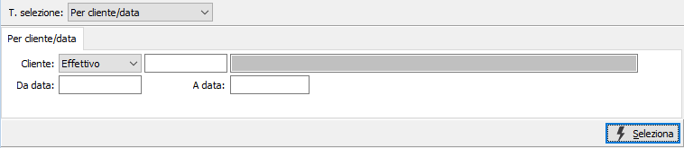
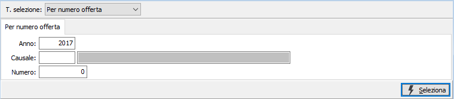
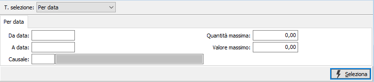
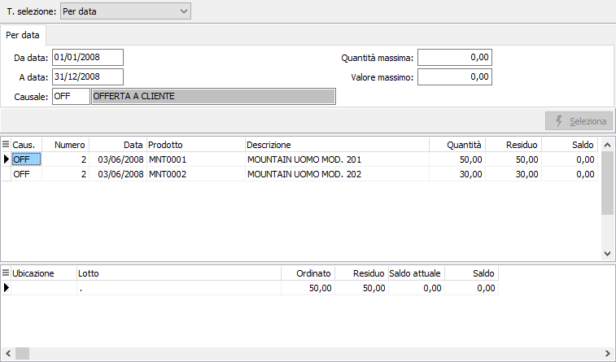

Saldo offerte
Il programma consente di visualizzare, in base a tre diverse modalità di selezione, le righe di offerta da evadere, allo scopo di effettuare i saldi.
La finestra video si articola su due sezioni: nella sezione superiore, il pannello di input per inserire i parametri di selezione, varia in relazione al tipo di selezione.
Tipo selezione per cliente / data

TIPO CLIENTE: definisce se analizzare le offerte di un cliente provvisorio o definitivo.
CLIENTE: codice del cliente, presente in anagrafica, a cui si desidera limitare la selezione di analisi. Sul campo sono attive le funzioni di ricerca (F9).
DA DATA: eventuale data da cui deve iniziare l’analisi dei documenti relativamente ai precedenti parametri di selezione. Confermando a vuoto, l’analisi inizia con il primo documento valido.
A DATA: eventuale data con cui si desidera terminare l’analisi dei documenti relativamente ai precedenti parametri di selezione. Confermando a vuoto, l’analisi si conclude con l'ultimo documento valido.
Tipo selezione per numero offerta

ANNO: inserire l'anno in cui è stato emessa l’offerta da saldare.
CAUSALE: codice della causale del documento che si vuole selezionare. Sul campo sono attive le funzioni di ricerca (F9).
NUMERO: inserire il numero dell’offerta, relativo alla causale di cui al campo precedente, che si vuole selezionare.
Tipo selezione per data

DA DATA: eventuale data da cui deve iniziare l’analisi dei documenti da selezionare. Confermando a vuoto, l’analisi inizia con il primo documento valido.
A DATA: eventuale data con cui si desidera terminare l’analisi dei documenti da selezionare. Confermando a vuoto, l’analisi si conclude con l'ultimo documento valido.
CAUSALE: eventuale codice della causale dei documenti che si vogliono selezionare. Sul campo sono attive le funzioni di ricerca (F9).
QUANTITÀ MASSIMA: indicare la quantità massima da evadere per ciascun prodotto visualizzato, al fine di limitare la selezione ai soli righi di offerta con quantità inferiore a quella indicata.
VALORE MASSIMO: indicare l’eventuale valore massimo di rigo di offerta da evadere per ciascun rigo selezionato, al fine di limitare la selezione alle sole residue offerte di valore inferiore a quello indicato.
Confermando i parametri di selezione inseriti tramite pressione del bottone Seleziona, viene avviata la selezione e nella griglia della sezione inferiore della maschera video vengono visualizzate lei righe di offerta coerenti con i parametri inseriti; per ogni riga viene visualizzato, se presente e gestito, l'eventuale dettaglio.

Per ciascun rigo di offerta selezionato, vengono visualizzate causale, numero, data, codice e descrizione prodotto, quantità offerta, quantità da evadere e saldo corrente. E’ presente anche la colonna Saldo, inizialmente con valori azzerati.
L’utente può scorrere le righe offerta selezionate, o i relativi dettagli, e cliccando due volte sulle righe, o dettagli, che presentano quantità che non si vogliono evadere, completare automaticamente la casella corrispondente nella colonna saldo con la quantità residua da evadere che, una volta effettuata la registrazione, verrà memorizzata a saldo del rigo di ordine.
Per rendere effettivo l’intervento effettuato sui vari righi saldati, è necessario confermare premendo il bottone Salva o il tasto funzione F10.